6 Att se enskilda molekyler
Med ett förstoringsglas kan man se fibrerna i ett papper eller fjällen på en fjärilsvinge. Med ett vanligt ljusmikroskop, av det slag som finns i skolans biologisal, kan man se celler och till och med bakterier. Det ligger nära till hands att tro att det bara är en fråga om att förstora tillräckligt mycket: med en ännu starkare lins borde man kunna se proteinerna inne i cellen, och till sist atomerna.
Så är det inte. Hur bra linser man än bygger finns det en gräns för hur små detaljer ett ljusmikroskop kan visa, och den gränsen ligger långt ovanför storleken på ett protein. Som vi såg i Kapitel 1 är en ribosom bara 20–30 nanometer stor, och ett vanligt protein ungefär 5 nanometer. Ändå kan forskare i dag följa enskilda proteiner när de rör sig inne i en levande cell, och se hur de binder till DNA och släpper igen.
Det här kapitlet handlar om hur det går till. Vi börjar med ljuset självt, fortsätter med molekyler som lyser och med mikroskopet, och ser sedan hur forskare har lärt sig att lura den gräns som länge ansågs omöjlig att passera. Till sist ser vi på de metoder som visar molekylerna ända ned till de enskilda atomerna: röntgenkristallografi, kryoelektronmikroskopi och NMR.
Emil Marklund, som kapitlet bygger på, är forskare vid Institutionen för biokemi och biofysik och vid SciLifeLab i Solna, och studerar bland annat hur proteiner hittar rätt ställe på DNA, ett exempel som vi återkommer till.
6.1 Ljus: vågor med olika längd
Både molekyler som lyser och gränsen för vad ett mikroskop kan visa hänger på ljusets egenskaper. Därför börjar vi med vad ljus är.
Ljus är en form av elektromagnetisk strålning. Man kan tänka sig strålningen som en våg, ungefär som vågorna på en sjö. Avståndet mellan två vågtoppar kallas våglängden. För det ljus som våra ögon kan se, det synliga ljuset, är våglängden mellan ungefär 400 och 700 nanometer. En nanometer är en miljondels millimeter, så ljusvågorna är mycket korta: på en millimeter ryms omkring 2 000 vågor av grönt ljus.
Våglängden bestämmer vilken färg vi ser. Det kortaste synliga ljuset, kring 400 nanometer, är violett. Sedan kommer blått, grönt, gult och orange, och det längsta synliga ljuset, kring 700 nanometer, är rött. Vitt ljus, som solljus, är en blandning av alla våglängder i det synliga området. I en regnbåge bryts solljuset i regndropparna så att de olika våglängderna skiljs åt och vi kan se färgerna var för sig.
Det synliga ljuset är bara en liten del av all elektromagnetisk strålning. Strålning med längre våglängd än rött ljus kallas infraröd strålning, och den känner vi som värme. Ännu längre våglängd har mikrovågor och radiovågor. Åt andra hållet, med kortare våglängd än violett ljus, kommer ultraviolett strålning (UV), som ger solbränna, och sedan röntgenstrålning och gammastrålning (Figur 6.1).
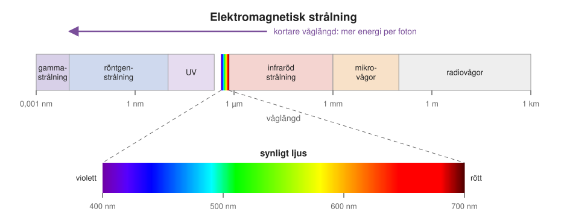
En viktig regel är att ju kortare våglängd, desto mer energi bär strålningen. Ljus tas nämligen upp och sänds ut i små energipaket, som kallas fotoner, och ju kortare våglängden är, desto mer energi har varje paket. En foton av blått ljus har ungefär en och en halv gång så mycket energi som en foton av rött ljus. Därför kan UV-strålning skada huden medan rött ljus är ofarligt, och därför kan röntgenstrålning tränga igenom kroppen. Regeln kommer att visa sig viktig två gånger i kapitlet: när vi förklarar varför vissa molekyler lyser, och när vi ser hur man kan få syn på enskilda atomer.
6.2 Fluorescens: molekyler som lyser
För att se en viss sorts molekyl i en cell måste man få just den att synas mot allt annat. Det vanligaste sättet är att få den att lysa. Vissa molekyler kan nämligen ta upp ljus av en färg och sända ut ljus av en annan.
Ett enkelt försök visar hur det ser ut. Man tar två provrör med en klar vätska. I det ena finns bara vätskan, i det andra är en särskild sort färgämne upplöst. När man lyser med en grön laserpekare genom rören syns strålen som en grön linje i det första röret. I det andra röret lyser strålen i stället gul, sett från sidan. Ändå är ljuset som kommer ut på andra sidan röret fortfarande grönt. Det beror på att bara en del av laserljuset tas upp, och att molekylerna sänder ut sitt gula ljus åt alla håll, inte bara framåt.
Det man ser i det andra röret kallas fluorescens. Molekylerna i vätskan tar upp det gröna ljuset och sänder sedan ut eget ljus, med lite längre våglängd: gult. En molekyl som kan göra så kallas en fluorofor. Man kan se den som en liten lampa som tänds av ljus av en färg och då lyser med en annan. Ljuset som skickas in kallas excitationsljus, och ljuset som molekylen sänder ut kallas emissionsljus.
Fluorescens finns i vardagen. Överstrykningspennor lyser så starkt för att färgen fluorescerar, och många tvättmedel innehåller ämnen som tar upp osynligt UV-ljus och sänder ut blått ljus, så att vit tvätt ser extra vit ut. Under en UV-lampa på ett diskotek lyser vita skjortor därför blått.
Varför blir ljuset rödare?
Att det utsända ljuset alltid har lite längre våglängd än det som togs upp går att förstå med energi (Figur 6.2). En molekyl kan befinna sig i olika tillstånd med olika mycket energi. Normalt är den i sitt grundtillstånd, med lägsta möjliga energi. När den tar upp ljus lyfts den till ett exciterat tillstånd med högre energi, och det kallas att molekylen exciteras.
I det exciterade tillståndet stannar molekylen bara en mycket kort stund, ungefär en miljarddels sekund. Under den tiden förlorar den lite av energin som värme, genom att atomerna i molekylen och i omgivningen sätts i vibration. Sedan faller den tillbaka till grundtillståndet och sänder ut resten av energin som ljus. Eftersom en del av energin redan har gått förlorad har det utsända ljuset mindre energi, och alltså längre våglängd, än det ljus som togs upp. Energin försvinner inte; den blir bara till värme i stället för ljus.
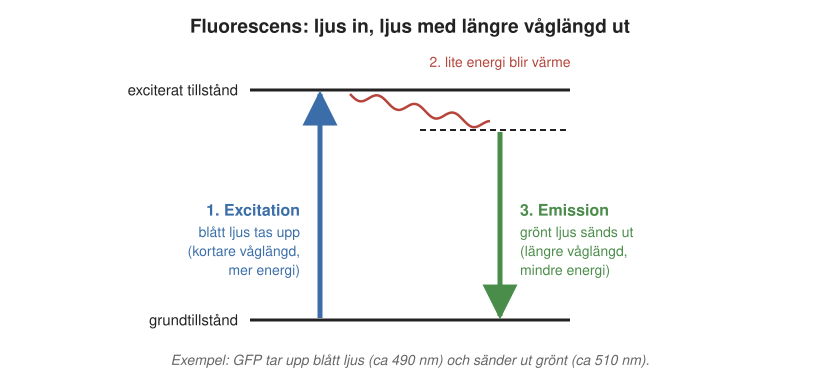
Det är förenklat att säga att en fluorofor tar upp ett visst ljus och sänder ut ett annat. I verkligheten kan den exciteras av ett helt band av våglängder, och den sänder ut ljus i ett annat band, förskjutet mot längre våglängder. Man beskriver det med två kurvor, ett excitationsspektrum och ett emissionsspektrum. Det är skillnaden mellan dem som gör fluorescens så användbar: med färgfilter kan man stänga ute excitationsljuset och bara släppa igenom ljuset från fluoroforerna.
Vilka molekyler lyser?
Långt ifrån alla molekyler fluorescerar; de flesta gör det inte. Det som krävs är att några av molekylens elektroner inte är bundna till en enda atom, utan kan röra sig fritt över en längre sträcka av molekylen, som ett moln. Det finns i molekyler där enkla och dubbla bindningar mellan kolatomer växlar i en lång kedja eller i ringar.
Hur långt elektronmolnet sträcker sig bestämmer färgen. Två välkända fluoroforer i forskningen, Cy3 och Cy5, är byggda på samma sätt, men i Cy5 är kedjan i mitten två kolatomer längre. Cy3 exciteras av grönt ljus och lyser gulorange, medan Cy5, med sin längre kedja, exciteras av rött ljus och lyser djupröd. Ju längre elektronmoln, desto längre våglängd. Genom att ändra molekylerna kan kemister därför tillverka fluoroforer i nästan vilken färg som helst.
6.3 GFP: ett protein som lyser
Fluoroforerna ovan är små organiska molekyler som tillverkas av kemister. För att använda dem i biologin måste man fästa dem på den molekyl man vill studera, och få in dem i cellen. Det finns ett elegantare sätt: att låta cellen själv tillverka fluoroforen.
I havet utanför Nordamerikas västkust lever en genomskinlig manet, Aequorea victoria, som lyser grönt i kanten av sin klocka. Ljuset kommer från ett protein som kallas grönt fluorescerande protein, eller GFP (eng. green fluorescent protein). GFP är byggt som en tunna av proteinkedjan, och inuti tunnan sitter själva fluoroforen (Figur 6.3). Den bildas av tre av proteinets egna aminosyror, som i en kemisk reaktion helt av sig själva bildar en liten ring med rörliga elektroner, just det som behövs för fluorescens. Proteinet behöver alltså inga andra proteiner eller hjälpmolekyler, bara lite syre från omgivningen: när kedjan väl har veckat sig börjar det lysa.
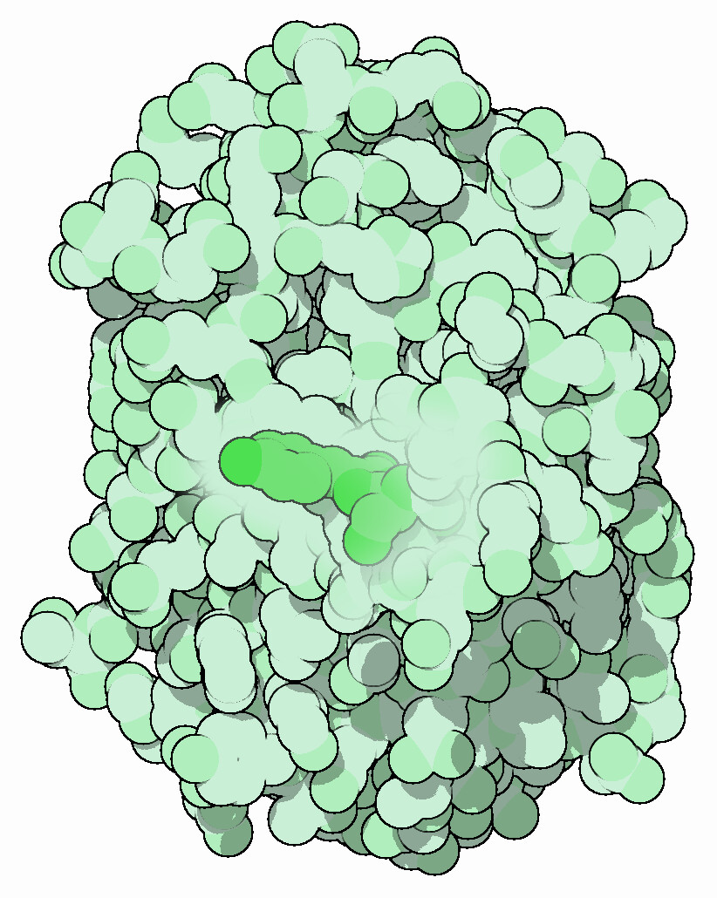
Att märka ett protein med GFP
Det som gör GFP så användbart är att det är ett protein, och alltså tillverkas efter en gen. Med de gentekniska metoder som beskrivs i Kapitel 3 kan man ta genen för GFP och foga ihop den med genen för det protein man är intresserad av, så att de bildar en enda lång gen. När cellen läser av den sammanfogade genen tillverkar den ett protein som består av båda delarna: det egna proteinet med GFP fäst i ena änden, som en lampa på en cykelhjälm. Ett sådant sammanfogat protein kallas ett fusionsprotein.
Lampan följer med proteinet vart det än går. Om man lyser på cellerna med blått ljus och tittar i ett mikroskop med rätt filter ser man precis var i cellen proteinet finns. I Figur 6.4 har forskare fogat GFP till ett protein som hör hemma i mitokondrierna, och mitokondrierna syns då som ett nät av gröna trådar. Cellkärnan, där proteinet inte finns, är mörk.
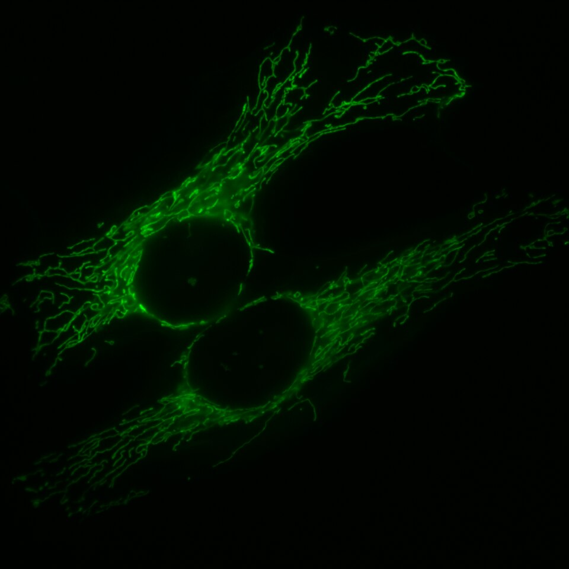
Metoden används i dag i nästan alla biologiska laboratorier. Med den kan man se var ett protein finns, när det tillverkas och hur det flyttar sig, i levande celler och till och med i hela djur.
Nobelpriset i kemi 2008
Nobelpriset i kemi 2008 delades lika mellan tre forskare “för upptäckten och utvecklingen av det gröna fluorescerande proteinet, GFP”. Osamu Shimomura renade fram GFP ur maneter och visade att det lyser grönt. Martin Chalfie visade på 1990-talet att genen för GFP kan föras in i andra organismer, och att proteinet då lyser även där, utan någon hjälp från maneten. Roger Tsien tog reda på hur fluoroforen bildas och ändrade proteinet med genteknik, så att det lyser starkare och i andra färger: blått, cyan och gult. Med liknande proteiner från koraller finns i dag fluorescerande proteiner i nästan regnbågens alla färger. Med flera färger kan man märka flera proteiner i samma cell och se var de finns i förhållande till varandra.
När priset presenterades berättade Gunnar von Heijne, som då satt i Nobelkommittén för kemi och som vi möter igen i Kapitel 8, om Chalfies första försök. Chalfie hade fört in genen för GFP i bakterier, låtit dem växa över natten och på morgonen ställt odlingen på en UV-lampa. Den lyste grönt. Gunnar von Heijne beskrev det som en sådan upplevelse som en forskare bara får en gång i livet, som får hjärtat att slå tre gånger snabbare än vanligt. Han visade det också: han ställde ett rör med sådana bakterier på en UV-lampa, och odlingen lyste grönt, starkast i botten där bakterierna hade sjunkit ned.
6.4 Varför titta på en molekyl i taget?
Med fluorescerande märkning har vi ett sätt att få en viss sorts molekyl att lysa. Men varför vill man se en enda molekyl, och inte bara var molekylerna finns i stort?
De flesta biokemiska experiment görs på enorma mängder molekyler samtidigt, till exempel i ett provrör med miljarder proteiner. Det man mäter är då ett medelvärde av alla molekylerna.
Föreställ dig att du ska förstå en fotbollsmatch, men bara får veta var spelarnas medelposition är vid varje tidpunkt. Medelpositionen kommer att ligga någonstans nära mittcirkeln och röra sig lite fram och tillbaka. Du får aldrig veta att det finns en målvakt som står kvar vid sitt mål, att anfallarna springer framåt och att försvararna stannar bakom. Om du i stället kan följa varje spelare för sig ser du direkt att de har olika roller.
Med molekyler är det likadant. I ett enmolekylexperiment (eng. single-molecule experiment) följer man molekylerna en och en. Då kan man se att vissa molekyler gör en sak och andra en annan, eller att samma molekyl ibland rör sig fritt och ibland sitter fast. Sådant försvinner i ett medelvärde. Men för att följa enskilda molekyler behövs ett mikroskop som kan visa dem.
6.5 Fluorescensmikroskopet
Ett fluorescensmikroskop är byggt för att visa just det ljus som fluoroforerna sänder ut, och stänga ute allt annat ljus. Resultatet är en bild där bakgrunden är svart och bara de märkta molekylerna lyser. En enda fluorofor ger en liten ljusprick på kameran.
Den vanligaste typen fungerar så här. Ljus från en lampa eller en laser passerar ett färgfilter som bara släpper igenom excitationsljuset, till exempel blått ljus för GFP. Ljuset träffar en särskild spegel som reflekterar blått ljus men släpper igenom grönt. Spegeln skickar det blå ljuset genom objektivet, mikroskopets lins närmast provet, och vidare in i provet. Där exciteras fluoroforerna och sänder ut grönt ljus åt alla håll. En del av det gröna ljuset fångas upp av samma objektiv, går rakt igenom spegeln och ett filter till, och når till sist en mycket känslig kamera. Excitationsljuset och det utsända ljuset går alltså genom samma objektiv, åt var sitt håll.
Hur mycket mikroskopet förstorar beror på linsernas egenskaper, och med rätt linser verkar det som om man skulle kunna förstora hur mycket som helst. Om en ljusprick från en enda molekyl kan synas, borde man då inte kunna förstora tills man ser hur molekylen ser ut?
6.6 Diffraktionsgränsen: varför förstoring inte räcker
Svaret är nej, och skälet är ljusets vågnatur. När vågor passerar en öppning eller en kant breder de ut sig åt sidorna. Man kan se det när havsvågor passerar in genom en smal hamninfart: innanför sprider de sig i halvcirklar. Fenomenet kallas diffraktion, och det gäller också ljus. Ett objektiv är, för ljuset, en öppning med en viss storlek, så även ljuset som passerar objektivet breder ut sig lite åt sidorna.
Följden är att ljuset från en punkt aldrig kan samlas till en punkt igen. Även om ljuskällan är mycket mindre än en nanometer, som en enda fluorofor, blir bilden av den en suddig prick, ungefär lika stor som ljusets våglängd. För synligt ljus blir pricken omkring 400 nanometer i diameter. På fackspråk kallas pricken mikroskopets punktspridningsfunktion, eftersom den beskriver hur ljuset från en punkt sprids ut i bilden.
Att förstora mer hjälper inte, för då förstorar man bara den suddiga pricken. Det är som att förstora ett digitalfoto med för få bildpunkter: bilden blir större, men inte skarpare. Ligger två fluoroforer närmare varandra än ungefär halva prickens bredd, cirka 200 nanometer, flyter deras prickar ihop till en enda, och man kan inte avgöra om det är en eller två. Förmågan att skilja åt två punkter som ligger nära varandra kallas mikroskopets upplösning. Upplösningen anges i nanometer, och ett litet tal betyder alltså hög upplösning.
Gränsen kallas diffraktionsgränsen. Den beskrevs av den tyske fysikern Ernst Abbe redan 1873, och under mer än hundra år betraktades den som en naturlag som inget ljusmikroskop kunde ta sig förbi.
Jämför man med storleken på livets molekyler blir problemet tydligt (Figur 6.5). En liten organisk molekyl, som ett socker, är under en nanometer stor och ett protein omkring 5 nanometer. Ett protein är alltså omkring fyrtio gånger mindre än det minsta ett vanligt ljusmikroskop kan skilja ut. Det är därför man kan se celler och bakterier i ett ljusmikroskop, men inte proteiner.
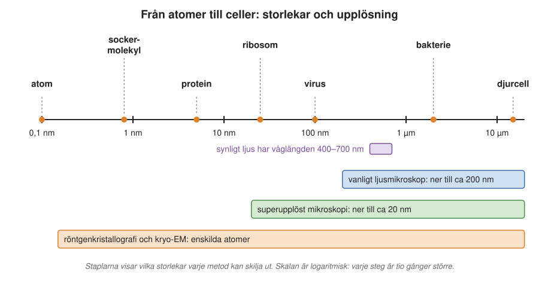
6.7 Superupplöst mikroskopi: att lura gränsen
Mot slutet av 1900-talet och i början av 2000-talet hittade flera forskare sätt att komma förbi diffraktionsgränsen. Metoderna kallas med ett samlingsnamn superupplöst mikroskopi. Idén bakom den första metoden vi ska se på är enkel.
Diffraktionsgränsen säger att två prickar som ligger nära varandra flyter ihop. Den säger inte att man inte kan bestämma var en prick befinner sig. En ensam suddig prick har fortfarande en mittpunkt, och den mittpunkten kan man bestämma mycket noggrannare än prickens bredd, om man samlar in tillräckligt med ljus. Tänk dig ett ljus i ett fönster på långt håll i dimma. Ljuset ser ut som en stor, suddig gloria, men du kan ändå peka ut ganska exakt var ljuset står. Problemet uppstår bara när många ljus står tätt och deras glorior flyter ihop.
Lösningen är därför att se till att bara några få fluoroforer lyser åt gången, så få att deras prickar inte överlappar. Man bestämmer mittpunkten för varje prick, släcker dem och tänder några andra. På det sättet blir upplösningen omkring 20 nanometer, tio gånger bättre än diffraktionsgränsen.
PALM och STORM: tänd några få i taget
Två metoder bygger på den här idén. De har krångliga engelska namn som förkortas PALM (photoactivated localization microscopy) och STORM (stochastic optical reconstruction microscopy). Principen är densamma (Figur 6.6):
- Man använder särskilda fluoroforer som från början är avstängda, eller lyser i en annan färg, och som kan ställas om med ljus av en annan färg, ofta violett eller ultraviolett.
- Man lyser med en så svag dos av det ljuset att bara ett fåtal fluoroforer, utvalda helt slumpvis, slås på.
- De påslagna fluoroforerna exciteras och lyser. Kameran tar en bild, och en dator bestämmer mittpunkten för varje prick.
- Man fortsätter att lysa tills de påslagna fluoroforerna har blekts, det vill säga förstörts av ljuset, så att de slocknar för gott.
- Sedan slås en ny slumpvis grupp på, och allt upprepas, tusentals gånger.
Till sist lägger man ihop alla uppmätta mittpunkter till en bild. Bilden är alltså en rekonstruktion: man ser aldrig alla molekyler lysa samtidigt, utan bygger upp bilden prick för prick av positioner som mätts en i taget. Skillnaden mellan metoderna är att PALM använder fluorescerande proteiner, släktingar till GFP, medan STORM använder små organiska fluoroforer.
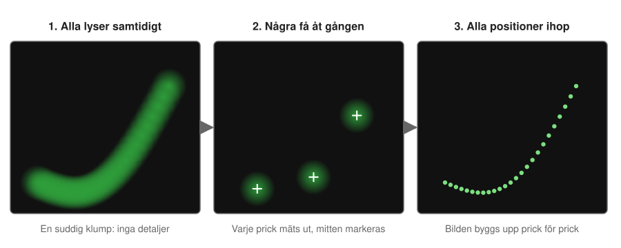
Ett exempel gäller ett protein som heter Tar och sitter i cellmembranet hos bakterien Escherichia coli. Tar är en receptor, alltså ett protein som tar emot signaler utifrån, i det här fallet om det finns näring i närheten, så att bakterien kan simma åt rätt håll. I experimentet var Tar märkt med mEos, en släkting till GFP som lyser grönt från början men byter till rött när det belyses med violett ljus. Bara de omställda, röda molekylerna mättes, några få åt gången.
I ett vanligt fluorescensmikroskop såg man bara att Tar samlas vid bakteriens ändar. Med PALM kunde man se att proteinerna ligger i kluster av olika storlek, och man kunde urskilja enskilda Tar-proteiner, även utanför ändarna (Figur 6.7).
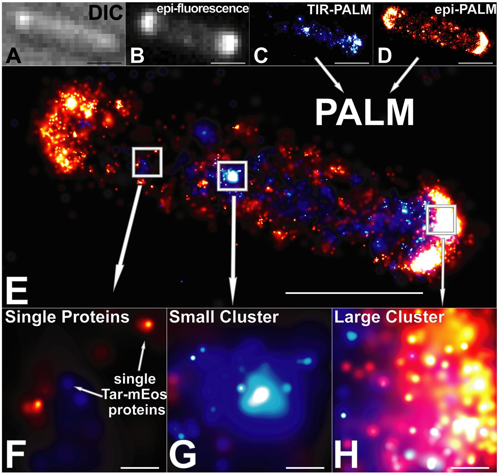
STED: en munk av ljus
En annan väg till superupplösning är STED (stimulated emission depletion). Den bygger på en annan sorts mikroskop, ett konfokalmikroskop. Där lyser man inte på hela provet på en gång, utan fokuserar ljuset till en liten prick och flyttar pricken punkt för punkt över provet, ungefär som när man läser en sida rad för rad. Bilden byggs sedan upp av ljuset från alla punkterna. Pricken är dock fortfarande begränsad av diffraktionen, och upplösningen blir inte bättre än i ett vanligt mikroskop.
I STED-mikroskopet lägger man till en andra ljusstråle, formad som en ring med ett hål i mitten, en “munk” (Figur 6.8). Den andra strålen har en färg som stänger av fluoroforerna, så att de inte kan lysa. Ringen lägger sig runt den vanliga excitationspricken och släcker alla fluoroforer utom de som ligger i det lilla hålet i mitten. Kvar blir en lysande prick som är mycket mindre än diffraktionsgränsen. Med STED kommer man ned till omkring 50 nanometer.
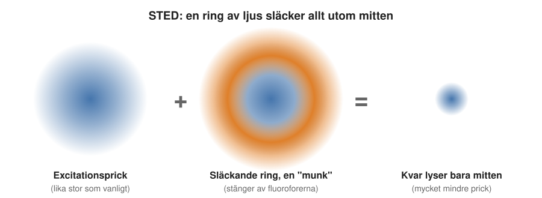
Skillnaden mot ett vanligt mikroskop syns tydligt i Figur 6.9. STED kräver dock mer avancerad optik än PALM och är svårare att bygga.
En fördel med munken är att idén kan drivas vidare. I en nyare metod, MINFLUX, använder man i stället en munk av excitationsljus och letar efter det läge där fluoroforen ligger mitt i hålet och därför lyser minst. På så sätt har man kommit ned till ungefär en nanometer, i nivå med storleken på en liten molekyl. Både STED och MINFLUX finns på SciLifeLab i Solna.
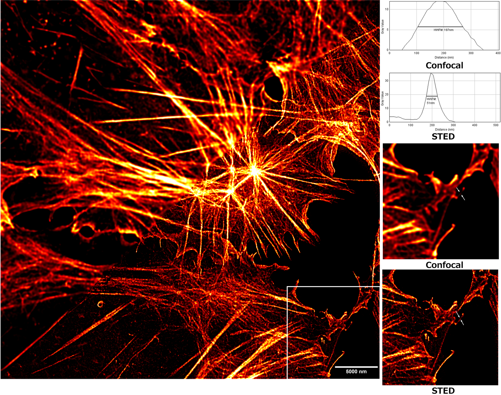
Nobelpriset i kemi 2014
Superupplöst mikroskopi belönades med Nobelpriset i kemi 2014, “för utveckling av superupplöst fluorescensmikroskopi”. Priset delades mellan Eric Betzig, som utvecklade PALM, Stefan Hell, som utvecklade STED, och William E. Moerner, som 1989 var först med att påvisa en enda molekyl med hjälp av ljus och därmed lade grunden för enmolekylexperimenten. Med deras metoder blev ljusmikroskopet ett verktyg för att studera molekyler, inte bara celler.
6.8 Molekyler i rörelse
Superupplöst mikroskopi kan visa var molekyler sitter. Men biologin står inte still. Molekylerna i en cell rör sig, binder till varandra och släpper, och det är ofta just förändringarna man vill förstå. Med fluorescensmikroskopi kan man följa enskilda molekyler över tid, i levande celler. Det kräver att fluoroforen sänder ut tillräckligt mycket ljus under den korta tid varje bild tas, och en kamera som är tillräckligt snabb. I dag kan man ta en bild ungefär varje tusendels sekund.
Molekylsoppan
För att förstå vad man ser behöver man veta hur molekyler rör sig i en cell. Som vi såg i Kapitel 2 är cellen tätt packad med proteiner och andra molekyler, som hela tiden stöter i varandra. Värmen gör att alla molekyler rör sig, och varje molekyl får hela tiden knuffar från sina grannar i slumpvisa riktningar. Den rör sig därför i ett oregelbundet sicksackmönster, utan bestämt mål. Rörelsen kallas diffusion eller brownsk rörelse. Den kräver ingen energi från cellen; den drivs av värmen.
En liten molekyl diffunderar snabbt, en stor långsamt. Ett protein som binder till något stort, till exempel en ribosom eller en DNA-molekyl, blir därför plötsligt nästan stillastående. Det kan man utnyttja.
tRNA som tar korta pauser
Som vi såg i Kapitel 1 är det tRNA-molekyler som för aminosyror till ribosomen när ett protein tillverkas. I ett experiment märkte forskare tRNA-molekyler med en fluorofor och följde dem en och en inne i levande E. coli-bakterier. Molekylernas vägar visade ett tydligt mönster: en stund rörde sig tRNA:t mycket snabbt, sedan stod det nästan stilla, och därefter rörde det sig snabbt igen.
Tolkningen är att det snabba tRNA:t är fritt och diffunderar runt i cellen. När det kommer till en ribosom och lämnar av sin aminosyra sitter det fast i ett mycket större komplex, och rör sig därför långsamt. När det släpper från ribosomen blir det snabbt igen. Varje paus varar omkring en tiondels sekund. På det sättet kan man mäta hur proteintillverkningen går till, steg för steg, inne i en levande cell, något som aldrig hade gått att se i ett medelvärde från miljarder molekyler.
6.9 Hur hittar ett protein rätt på DNA?
Det sista exemplet ligger nära Emil Marklunds egen forskning. Ett protein som styr en gen måste först hitta rätt ställe bland miljontals baspar DNA, och med enmolekylexperiment kan man se hur det går till. För att förstå varför proteinet behöver hitta just det stället börjar vi med hur gener slås på och av.
Gener som slås på och av
Alla gener används inte hela tiden. En bakterie som får en viss sorts socker att äta behöver tillverka de enzymer som bryter ned just det sockret, men det vore slöseri att göra dem när sockret saknas. Hos människan har alla celler samma DNA, men en immuncell använder andra gener än en nervcell. Gener slås på och av av transkriptionsfaktorer, proteiner som binder till DNA nära den gen de styr (Kapitel 1). En transkriptionsfaktor som slår på en gen kallas en aktivator, och en som stänger av en gen kallas en repressor.
Ett klassiskt exempel är lac-repressorn i E. coli. Den styr en grupp gener, ett operon (Kapitel 3), med enzymer som behövs för att ta upp och bryta ned mjölksocker, laktos. När det inte finns någon laktos sitter repressorn på ett särskilt ställe på DNA:t, en kort bassekvens strax intill operonets början, som kallas operator. Där står den i vägen för RNA-polymeraset, enzymet som ska kopiera generna till mRNA, och generna förblir avstängda.
När bakterien får laktos bildas en liten molekyl av laktosen som binder till repressorn. Repressorn ändrar då form och kan inte längre hålla fast vid DNA:t. Den släpper, RNA-polymeraset kommer åt, och enzymerna för att bryta ned laktos tillverkas. När laktosen är slut binder repressorn till DNA:t igen. I laboratoriet använder man ofta en konstgjord molekyl som liknar laktos, IPTG, som på samma sätt får repressorn att släppa. Den kallas en inducerare.
En nål i en höstack
Lac-repressorn måste hitta sin operator, en sträcka på bara ett tjugotal baspar, bland de ungefär 5 miljoner baspar som finns i bakteriens DNA. Det är som att leta efter en viss mening i en bokhylla full av böcker. Hur gör den det?
Repressorn har inget att navigera efter. Den diffunderar slumpvis runt i cellen tills den stöter på DNA. Men i stället för att släppa direkt om den hamnat fel, kan den glida längs DNA-molekylen en bit och känna efter om rätt bassekvens finns där. Sedan släpper den, diffunderar fritt en stund, landar på ett nytt ställe och glider igen (Figur 6.10). Kombinationen av fritt sökande i tre dimensioner och glidande längs DNA:t i en dimension kallas faciliterad diffusion (underlättad diffusion).
Idén har en lång historia. Redan 1970 märkte forskare att lac-repressorn hittar sin operator snabbare än ren diffusion borde tillåta. Förklaringen med glidning föreslogs under 1970-talet och blev en fullständig teori 1981, och många års studier har visat att det är så transkriptionsfaktorer söker.
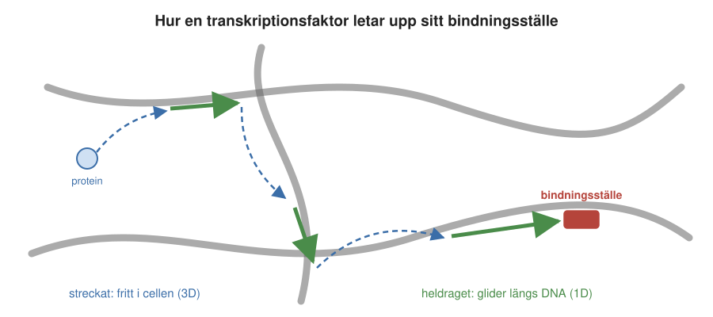
Glidandet går att se direkt. I ett experiment i provrör fäste Emil Marklund och hans kolleger långa DNA-molekyler i ena änden och sträckte ut dem med ett flöde av vätska, som tång i en ström. Sedan tillsatte de lac-repressorer märkta med en fluorofor. I mikroskopet syntes hur enskilda repressorer landade på DNA:t och gled fram och tillbaka längs det.
Hur lång tid tar sökandet?
Med några få mätvärden kan man göra en överslagsräkning av hur lång tid sökandet borde ta. Mätningar har visat att lac-repressorn varje gång den landar på DNA:t glider över ungefär 50 baspar, och att den då stannar på DNA:t i ungefär en tusendels sekund. Andra mätningar har visat att repressorn tillbringar det mesta av söktiden, omkring 90 procent, bunden till DNA:t och glidande längs det, så att tiden mellan landningarna kan försummas.
I genomsnitt måste repressorn söka igenom ungefär hela DNA:t innan den hittar rätt. Den behöver alltså 5 miljoner delat med 50, det vill säga 100 000, landningar. Var och en tar en tusendels sekund, och hela sökandet tar därför ungefär 100 sekunder.
Kan man mäta det direkt? Ja, i levande celler. Experimentet bygger på att en repressor bara syns som en prick i mikroskopet när den sitter still. En repressor som rör sig fritt hinner flytta sig under den tid bilden tas, och dess ljus sprids ut över hela cellen.
I experimentet hade bakterierna en lac-repressor som var märkt med ett fluorescerande protein. Bakterierna fick först växa med induceraren IPTG, så att repressorerna inte kunde binda till DNA:t. Sedan byttes vätskan runt cellerna snabbt mot en utan IPTG. Repressorerna började söka, och så fort en av dem band till sin operator satt den stilla och syntes som en tydlig ljusprick.
Genom att räkna hur många celler som hade fått en prick efter olika lång tid fick forskarna en kurva som steg snabbt i början och sedan planade ut. Kurvan visade att det i genomsnitt tog ungefär 80 sekunder innan en cell fick sin prick (Figur 6.11); efter den tiden hade ungefär två tredjedelar av cellerna hittat rätt.
I varje cell fanns dock ungefär fyra repressorer som sökte samtidigt, och fyra sökare hittar fram ungefär fyra gånger så fort som en. För en enda repressor blir söktiden därför omkring 4 × 80 = 320 sekunder, eller drygt fem minuter.
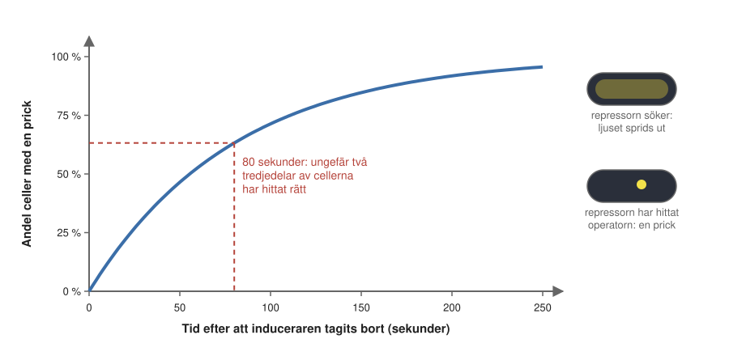
Det är samma storleksordning som överslagsräkningen gav. Att en enkel räkning med några få mätvärden och ett direkt experiment i levande celler stämmer så väl överens tyder på att man har förstått hur sökandet går till.
6.10 Kortare våglängd: att se atomerna
Superupplöst mikroskopi har kommit ned till några tiotal nanometer, och i bästa fall till en nanometer. Det räcker för att se var ett protein är och hur det rör sig, men inte för att se hur proteinet ser ut. För det behövs upplösning på atomnivå, omkring en tiondels nanometer. Det mått som brukar användas på den skalan är ångström (Å): en ångström är en tiondels nanometer, ungefär storleken på en atom. En bindning mellan två kolatomer är till exempel ungefär 1,5 ångström lång.
Som vi såg i fördjupningsrutan om diffraktionsgränsen bestäms den suddiga prickens storlek framför allt av våglängden. Vill man se atomer måste man alltså använda strålning med mycket kortare våglängd än synligt ljus. Det gör de två metoder som har gett oss de flesta bilder av proteiner i den här boken, röntgenkristallografi och kryoelektronmikroskopi. En tredje metod, NMR, bygger på en helt annan princip.
Röntgenkristallografi
Röntgenstrålning har en våglängd på omkring en ångström, i samma storlek som atomerna. Röntgenstrålning kan dock inte fokuseras med linser som vanligt ljus, och en enda molekyl sprider alldeles för lite strålning för att man ska kunna mäta den. Därför måste man först få proteinet att bilda en kristall, där miljarder likadana molekyler ligger ordnade i ett regelbundet mönster, ungefär som natrium- och kloridjonerna i ett saltkorn. När röntgenstrålning skickas genom kristallen förstärker alla molekylerna varandra, och strålningen böjs av i bestämda riktningar. På en detektor bakom kristallen syns ett mönster av prickar, ett diffraktionsmönster (Figur 6.12). Man vrider kristallen lite i taget och tar en ny bild för varje läge.
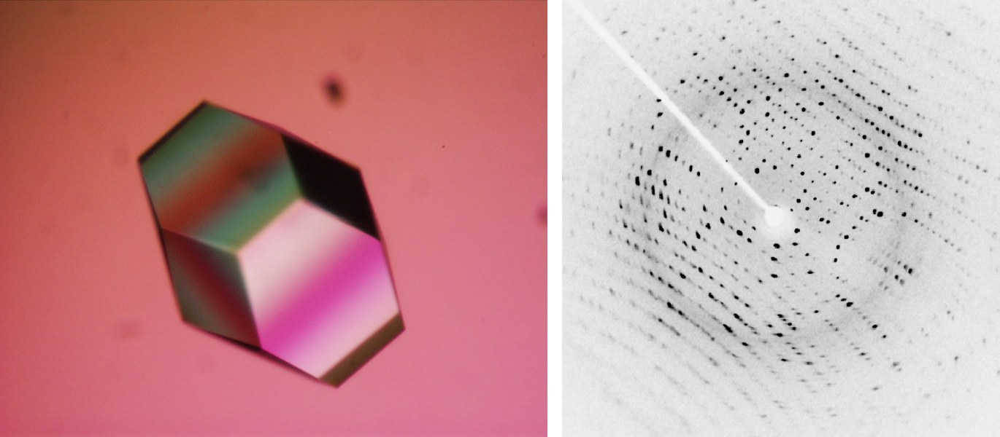
Ur mönstren kan man med omfattande beräkningar räkna fram en karta över hur elektronerna är fördelade i molekylen, och därmed var atomerna sitter. Forskaren bygger sedan in proteinkedjan i kartan, ungefär som när man lägger ett pussel, och får en tredimensionell modell av proteinet. Metoden kallas röntgenkristallografi. De flesta proteinstrukturer man känner har bestämts med den. Det var också röntgenbilder av DNA som visade vägen till dubbelspiralen (Kapitel 1).
Metoden prövades först, strax före första världskriget, på enkla kristaller som vanligt koksalt. Proteinerna kom mycket senare: de första proteinstrukturerna bestämdes i slutet av 1950-talet i Cambridge. John Kendrew löste 1958 strukturen av myoglobin, ett protein som lagrar syre i musklerna, och Max Perutz strukturen av hemoglobin strax därefter. De fick Nobelpriset i kemi 1962. Datorer fanns knappt, och mycket av beräkningarna gjordes för hand, liksom de fysiska modellerna av molekylerna.
I dag går det betydligt fortare. Den bästa röntgenstrålningen kommer från en synkrotron, en ringformad anläggning där elektroner rusar runt med nästan ljusets hastighet. Varje gång magneter böjer av elektronernas bana sänder de ut intensiv röntgenstrålning. Sveriges synkrotron, MAX IV, invigdes i Lund 2016.
Metoden har två begränsningar. Den första är kristallerna. Att få ett protein att kristallisera är fortfarande mer konst än vetenskap: ingen kan förutsäga vilken surhetsgrad, salthalt och andra villkor som behövs, så man prövar hundratals eller tusentals varianter, ofta med hjälp av robotar, och det kan ta år. Membranproteiner, som sitter i cellens fettlager, är särskilt besvärliga, eftersom de måste tas ut ur membranet (Kapitel 8).
Den andra begränsningen är att provet är en kristall och inte en levande cell. En rimlig fråga är om proteinet ändrar form när det packas i en kristall. Ett protein som förstörts, till exempel genom upphettning, kristalliserar inte, eftersom det inte har någon bestämd form som kan ordnas i ett mönster. Att ett protein bildar en kristall tyder därför på att det har kvar sin ordnade form. Men det man ser i kristallen är en ögonblicksbild av proteinet i dess mest stabila form. I cellen rör sig proteiner hela tiden, och stora delar kan böja sig och vrida sig. Hur de rörelserna går till kan röntgenkristallografi inte visa.
Kryoelektronmikroskopi
I ett elektronmikroskop använder man en stråle av elektroner i stället för ljus. Det kan låta konstigt att elektroner skulle ha en våglängd, men enligt kvantmekaniken uppför sig små partiklar ibland som vågor. Elektroner som accelererats till den hastighet de har i ett elektronmikroskop har en våglängd på bara några hundradels ångström, betydligt kortare än röntgenstrålningens.
I kryoelektronmikroskopi, ofta förkortat kryo-EM, behövs inga kristaller. En liten droppe av proteinlösningen läggs på ett litet nät och fryses blixtsnabbt genom att doppas i flytande etan, som kylts med flytande kväve till omkring minus 180 grader. Vattnet hinner då inte bilda iskristaller utan stelnar som glas, och proteinerna fryses fast i alla möjliga riktningar. Provet hålls fryst hela vägen in i mikroskopet.
Sedan tar mikroskopet tusentals bilder, ofta helt automatiskt under en helg. Tillsammans visar de tiotusentals till hundratusentals enskilda molekyler, sedda från olika håll. Varje molekyl syns bara som en brusig och otydlig skugga, eftersom man måste använda svag strålning: elektronerna skadar provet, och det är strålskadorna snarare än våglängden som begränsar upplösningen.
Det är här datorn kommer in. Datorprogram sorterar skuggorna efter hur molekylerna ligger och lägger ihop dem till en tredimensionell karta, ungefär som när en datortomograf på sjukhuset bygger upp en bild av kroppen från många röntgenbilder i olika vinklar (Figur 6.13). Ett protein som har studerats på det sättet är GroEL, en tunnformad chaperon som hjälper andra proteiner att vecka sig (Kapitel 13).
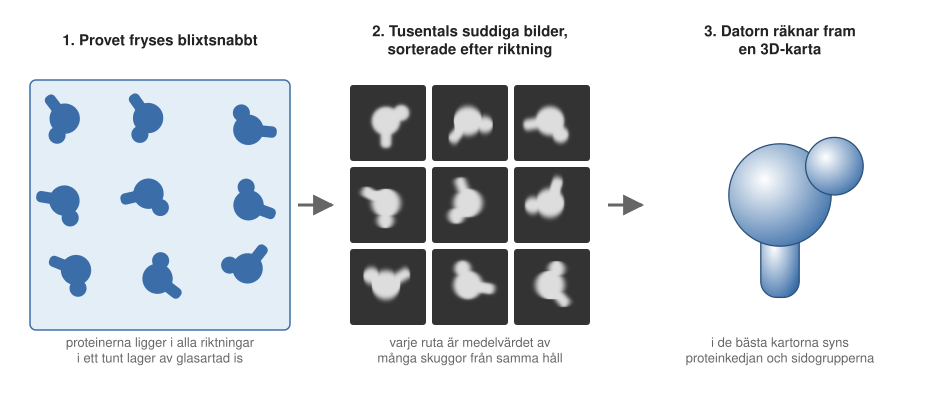
Länge gav kryo-EM bara suddiga klumpar där man inte kunde se några atomer. Omkring 2013 kom mycket känsligare elektrondetektorer och bättre datorprogram, och sedan dess kan man ofta se hur proteinkedjan och sidogrupperna ligger, med en upplösning på 2–4 ångström. De allra bästa kryo-EM-bilderna, från 2020, når 1,2 ångström, lika bra som de bästa kristallstrukturerna.
Metoden passar särskilt bra för stora proteinkomplex och för membranproteiner, som är svåra att kristallisera. Jacques Dubochet, Joachim Frank och Richard Henderson fick Nobelpriset i kemi 2017 för utvecklingen av kryo-EM. Sverige har flera kryoelektronmikroskop, bland annat vid SciLifeLab i Solna.
Eftersom man ser enskilda molekyler kan man ibland upptäcka att proteinet förekommer i flera olika former i samma prov, och sortera fram en struktur för varje form. Men även här är provet fryst, och man kan inte följa hur en molekyl rör sig.
NMR: atomkärnor som små magneter
Den tredje metoden, NMR (kärnmagnetisk resonans, eng. nuclear magnetic resonance), använder varken kristaller eller kort våglängd. Den bygger på samma princip som magnetkameran på sjukhuset. Proteinet ligger löst i vatten i ett mycket starkt magnetfält. Vissa atomkärnor, till exempel väteatomernas, beter sig då som små magneter och kan ta upp radiovågor. Den exakta frekvensen beror på vilka atomer som finns i närheten. Ur mätningarna kan man räkna ut vilka atomer som ligger nära varandra, och därmed proteinets form.
Fördelen är att proteinet är i lösning, vid vanlig temperatur, och att man kan mäta hur olika delar av det rör sig. Nackdelen är att metoden bara fungerar bra för ganska små proteiner. Kurt Wüthrich fick Nobelpriset i kemi 2002 för att ha utvecklat NMR för att bestämma proteiners struktur.
Metoderna kompletterar varandra
| Ljusmikroskopi | Röntgenkristallografi | Kryo-EM | NMR | |
|---|---|---|---|---|
| Provet | levande celler | kristall | fryst lösning | lösning |
| Bästa upplösning | ca 200 nm (vanlig), 1–50 nm (superupplöst) | ca 1–3 Å | ca 1,2–4 Å (oftast 2–4 Å) | atomnivå, men bara för små proteiner |
| Enskilda molekyler | ja | nej | ja | nej |
| Rörelser | ja, i levande celler | nej | nej | ja, i provröret |
Ingen metod kan allt (Tabell 6.1). Röntgenkristallografi och kryo-EM visar proteinernas atomer, men bara i frysta ögonblicksbilder. NMR visar både form och rörelser, men bara för små proteiner i ett provrör. Fluorescensmikroskopi kan inte visa hur ett protein ser ut, men den kan visa var det finns och hur det rör sig, en molekyl i taget, i levande celler. Sedan 2020 kan man dessutom förutsäga många proteiners struktur med datorprogram som AlphaFold, tränade på de strukturer som metoderna ovan har gett (Kapitel 16). Tillsammans ger metoderna en bild av både livets molekyler och vad de gör.
6.11 Sammanfattning
- Synligt ljus är elektromagnetisk strålning med en våglängd på 400–700 nanometer. Ljuset kommer i energipaket, fotoner; ju kortare våglängd, desto mer energi har varje foton.
- En fluorofor tar upp ljus av en viss våglängd och sänder ut ljus med lite längre våglängd. Skillnaden beror på att en del av energin blir värme.
- Proteiner kan märkas med fluoroforer. Det gröna fluorescerande proteinet GFP, från en manet, kan fogas till ett protein med genteknik, så att cellen själv tillverkar ett självlysande protein (Nobelpriset i kemi 2008).
- Ett ljusmikroskop kan inte skilja detaljer som ligger närmare varandra än ungefär 200 nanometer, hur mycket man än förstorar. Det beror på diffraktion och kallas diffraktionsgränsen. Proteiner är ungefär 5 nanometer.
- Superupplöst mikroskopi kringgår gränsen, till exempel genom att låta några få fluoroforer lysa åt gången och bestämma var mitten av varje prick är (PALM, STORM), eller genom att släcka allt utom en liten prick (STED). Upplösningen blir 20–50 nanometer (Nobelpriset i kemi 2014).
- Genom att följa enskilda molekyler i levande celler kan man se sådant som försvinner i ett medelvärde, till exempel hur tRNA pausar på ribosomen och hur lac-repressorn söker sitt bindningsställe på DNA genom att växla mellan fri diffusion och glidning längs DNA:t.
- Röntgenkristallografi och kryoelektronmikroskopi använder mycket kortare våglängder och kan visa var atomerna sitter, men bara i frysta ögonblicksbilder. Röntgenkristallografi kräver kristaller; kryo-EM lägger ihop bilder av tiotusentals frysta molekyler (Nobelpriset i kemi 2017). NMR visar form och rörelser, men bara för små proteiner i lösning.
6.12 Nyckelbegrepp
- elektromagnetisk strålning – Strålning som kan beskrivas som vågor, från radiovågor via synligt ljus till röntgen- och gammastrålning. Ju kortare våglängd, desto mer energi.
- våglängd – Avståndet mellan två vågtoppar. För synligt ljus 400–700 nanometer; våglängden bestämmer vilken färg vi ser.
- fluorescens – När en molekyl tar upp ljus och strax därefter sänder ut ljus med lite längre våglängd.
- fluorofor – En molekyl, eller del av en molekyl, som kan fluorescera. Används för att märka de molekyler man vill se i mikroskopet.
- excitation – När en molekyl tar upp energi, till exempel från ljus, och lyfts från sitt grundtillstånd till ett tillstånd med högre energi.
- emission – När en exciterad molekyl faller tillbaka till grundtillståndet och sänder ut energin som ljus.
- GFP – Grönt fluorescerande protein (eng. green fluorescent protein), från maneten Aequorea victoria. Kan fogas till andra proteiner med genteknik så att de lyser grönt.
- fusionsprotein – Ett protein som tillverkats efter två sammanfogade gener och därför består av två proteiner i en kedja, till exempel ett protein med GFP fäst i ena änden.
- enmolekylexperiment – Experiment där man följer molekylerna en och en i stället för att mäta ett medelvärde av miljarder molekyler (eng. single-molecule experiment).
- fluorescensmikroskop – Mikroskop som belyser provet med excitationsljus och med filter bara släpper fram det ljus som fluoroforerna sänder ut.
- diffraktion – Att vågor breder ut sig åt sidorna när de passerar en öppning eller en kant. Gör att bilden av en ljuspunkt blir en suddig prick.
- upplösning – Förmågan att skilja två punkter som ligger nära varandra åt. Anges som ett avstånd; ett litet tal betyder hög upplösning.
- diffraktionsgränsen – Gränsen för hur små detaljer ett vanligt ljusmikroskop kan skilja åt, ungefär 200 nanometer för synligt ljus. Beskrevs av Ernst Abbe 1873.
- superupplöst mikroskopi – Ljusmikroskopi med bättre upplösning än diffraktionsgränsen, ner till 20–50 nanometer eller mindre. Exempel är PALM, STORM och STED.
- PALM och STORM – Superupplösta metoder där bara några få slumpvis påslagna fluoroforer lyser åt gången, så att mitten av varje prick kan bestämmas noggrant.
- STED – Superupplöst metod där en ring av ljus stänger av fluoroforerna runt en excitationsprick, så att bara en liten prick i mitten lyser.
- diffusion – Molekylers slumpvisa rörelse, som drivs av värme. Små molekyler diffunderar snabbare än stora.
- repressor – En transkriptionsfaktor som stänger av en gen, ofta genom att sitta i vägen för RNA-polymeraset.
- lac-repressorn – Ett protein i bakterien E. coli som stänger av generna för nedbrytning av laktos så länge det inte finns någon laktos.
- operator – Den korta bassekvens på DNA intill ett operon där en repressor binder.
- inducerare – En liten molekyl som får en repressor att släppa från DNA, så att generna slås på. För lac-repressorn en molekyl som bildas av laktos, eller den konstgjorda IPTG.
- faciliterad diffusion – Det sätt som transkriptionsfaktorer söker sitt bindningsställe: de växlar mellan fri diffusion i cellen och glidning längs DNA-molekylen.
- foton – Ett litet energipaket av ljus. Ju kortare våglängd ljuset har, desto mer energi har varje foton.
- röntgenkristallografi – Metod för att bestämma var atomerna sitter i ett protein. Man skickar röntgenstrålning genom en kristall av proteinet och räknar fram strukturen ur mönstret av prickar som uppstår.
- synkrotron – Ringformad anläggning där elektroner rusar runt med nästan ljusets hastighet och sänder ut intensiv röntgenstrålning. Används bland annat för röntgenkristallografi; Sveriges synkrotron, MAX IV, finns i Lund.
- kryoelektronmikroskopi – Metod där man fryser en proteinlösning blixtsnabbt och tar bilder med elektroner. Bilder av tiotusentals till hundratusentals enskilda molekyler läggs ihop till en tredimensionell bild. Förkortas kryo-EM.
- NMR – Kärnmagnetisk resonans. Metod där proteinet ligger löst i ett starkt magnetfält och atomkärnorna tar upp radiovågor; ger form och rörelser för små proteiner.
- ångström – Längdmått: en tiondels nanometer, ungefär storleken på en atom. Skrivs Å.
6.13 Testa dig själv
Flervalsfrågor
Välj ett svar och tryck på Rätta. Svarsalternativen visas i ny ordning varje gång.
Fundera vidare
6.1 Förklara med egna ord varför en fluorofor sänder ut ljus med längre våglängd än det ljus den tar upp. Använd begreppen grundtillstånd, exciterat tillstånd och energi.
6.2 En forskare vill veta var i cellen ett visst protein finns, och om det flyttar sig när cellen utsätts för stress. Beskriv hur hon kan använda GFP för att ta reda på det.
6.3 Förklara skillnaden mellan förstoring och upplösning. Varför hjälper det inte att bygga ett mikroskop som förstorar tio gånger mer för att se ett protein?
6.4 Gör samma överslagsräkning som i kapitlet för en tänkt bakterie som har dubbelt så mycket DNA, 10 miljoner baspar, men där repressorn glider över 100 baspar varje gång den landar på DNA:t. Anta att varje landning fortfarande tar en tusendels sekund. Hur lång blir söktiden? Vad säger det om varför glidningen är viktig?
6.5 Jämför fluorescensmikroskopi, röntgenkristallografi och kryoelektronmikroskopi. Vilken metod skulle du välja för att (a) se var atomerna sitter i ett enzym, och (b) se hur snabbt ett protein binder till DNA i en levande cell? Motivera.
Hjälp oss att förbättra kapitlet
Hittade du ett fel, eller något som var svårt att förstå? Skicka ett förslag i förslagsformuläret (kräver inloggning med SU-konto). Lärarna läser alla förslag inför nästa version av boken.
6.14 Läs mer
- Green Fluorescent Protein (GFP), Molecule of the Month på PDB-101 (på engelska), med bilder av David S. Goodsell.
- Nobelpriset i kemi 2008 och Nobelpriset i kemi 2014 på nobelprize.org (på engelska), med populärvetenskapliga förklaringar av GFP och superupplöst mikroskopi.
- Fluorescens och Grönt fluorescerande protein på svenska Wikipedia.
- Super-resolution microscopy och Diffraction-limited system på engelska Wikipedia.
- Nobelpriset i kemi 2017 på nobelprize.org (på engelska), om kryoelektronmikroskopi, och Röntgenkristallografi på svenska Wikipedia.
- Lac operon på engelska Wikipedia, om hur lac-repressorn styr generna för nedbrytning av laktos.
- Elf, Li och Xie, “Probing transcription factor dynamics at the single-molecule level in a living cell”, Science 316:1191 (2007), doi:10.1126/science.1141967: mätningen av hur lac-repressorn söker längs DNA:t (på engelska).